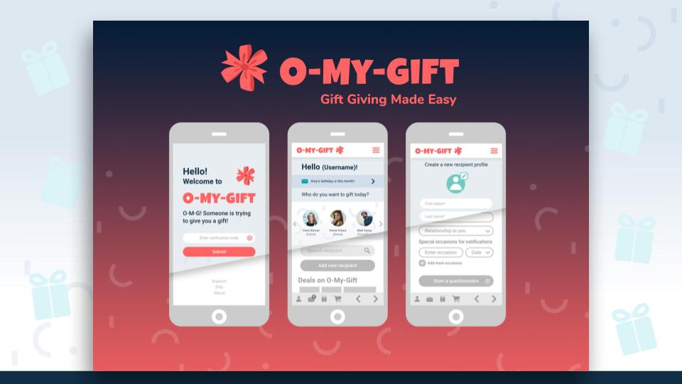

Quick Facts
- I'm based in Vancouver, BC
- Graduated from Applied Web Development with distinction at British Columbia Institute of Technology (BCIT)
- Always striving to improve my skills in web development
- Open to learning new things and technologies
- I enjoy meeting new people, going to workshops, playing computer games, and gardening
Skills & Tools
Most Used
Working Knowledge
Projects
Multipage Clinic Website
This website was created for the clinic that I work at. I used bootstrap as a base framework, designed the website, and coded it from scratch.
I gained a lot of practical knowledge from this project that I did not learn from my classes, such as organization, use of a CSS pre-processor, .htaccess, bootstrap, and more. There are 20+ pages on this website which meant that I ended up learning about organization of files/file paths, and using PHP includes to not repeat code. I also learned how to redirect pages, as there was an overhaul of the old website and some of the file paths were changed to improve SEO and site organization. Pre-processors such as Sass were not taught at BCIT, and is something I learned on my own to improve the organization and efficiency of writing CSS as the stylesheet became quite large.
- HTML
- CSS
- Sass
- Bootstrap
- PHP
UX/UI Class Final Project
This was our final project for the class UX/UI Fundamentals. The final project encompassed what we learned and our weekly assignments through the term with our group members. The hand-in was a large PDF document (40+ pages) of our design specifications including research, workflow, iterations of prototypes, and final mock up for a fictitious application.
This project involved working with our group members extensively. As our final hand-in document was something that was built on top of our weekly assignments, it required a great deal of organization and communication between our members throughout the term. I took a leadership role for our group as I wanted to deliver a good product and knew that to keep things on track, it would require someone to direct or steer the direction of the workflow. I noticed that our group members had different skillsets and experiences from each other, so I suggested tasks that would play on our strengths in order for us to deliver the best possible product. My main tasks for the final assignment included logic flows, and compiling every iteration of our application
Our program of choice was Adobe XD for prototyping. We went through several iterations of our application, each time improving the logic flow of our UI and application to improve the user experience. We used a Human-Centered Design approach to improve user experience, aiming for the app to feel as intuitive as possible. The demo included shows a sample of our final product.
- Adobe XD
- Human-Centered Design
- Wireframing
- Prototyping
- Leadership
- Teamwork
Magic the Gathering: Life Tracker with Custom Counters
This is one of my fun projects. I used to play Magic the Gathering (MTG), so I had the idea of making a MTG life counter to practice Javascript.
I added some features that are not seen in some other browser-based MTG life counters to make it more user-friendly. One of the features is being able to add your own custom counters, so that users can keep track of anything. (There is an endless list of things that use counters in MTG; usually people keep track using dice and/or pen and paper).
Another feature I added is the ability to move the tens and ones digits up and down separately. In MTG, depending on the game and format, it is possible for players to lose or gain more than 10 life at a time. This adds the convenience for users to be able to change the life totals quickly. Some other life counters only have a single dial which would force the user to click several times to change their life total.
- HTML
- CSS
- Javascript
Food & Beer Pairer using Punk API

This tool helps the user find a recommended beer to pair with their meal. It uses the Punk API which contains a catalogue of Brewdog beer (a brand of craft beer from the UK).
The user enters in a food item, then recommended beers are fetched according to the query. I made this with plain Javascript, then a second version using ReactJS. The demo uses ReactJS.
- HTML
- CSS
- Javascript
- Bootstrap
- ReactJS
Other Mini Projects
There are other small projects on my Github, such as "Duck Duck Goose" (a fun Simpsons tribute), a tip calculator, mock coffee shop website, image fetcher, and more.